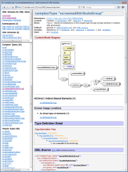
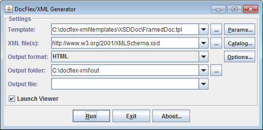
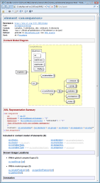

It should be noted that probably all modern XML editors currently support such a feature. However, the content model diagrams generated by XMLSpy look particularly elaborated and neat.
Along with the XML schema editor, XMLSpy includes an XML schema documentation generator able to generate rather poor (basically single-file) documentation, however, with all those beautiful diagrams included (along with the diagram hyperlinks).
Another important functionality provided by XMLSpy is an open Java API, which allows any Java application to call from itself some XMLSpy functionality, essentially turning XMLSpy into a kind of DLL (Dynamically Linked Library).
Those two features allowed us to integrate DocFlex/XML with XMLSpy so as to insert automatically graphic diagrams generated by XMLSpy into the XML schema / WSDL documentation generated by XSDDoc / WSDLDoc (with the full support of diagram hyperlinks). This, in effect, creates a new XML Schema / WSDL Documentation Generator with diagramming capabilities no other single product is offering now!
Click on the following screenshot to see a sample documentation generated with it:

Basically, what is needed for the integration to work is that your XMLSpy edition supports:
| Processing | Description |
|---|---|
|
The Full Mode is activated in the presence of a
Commercial License for
“DocFlex/XML XMLSpy Integration”.
This mode allows you to use the integration without any limitations.
Once it is enabled, you may think about the integration as just another part of
DocFlex/XML executables.
Anything else will depend on your other licenses.
|
|
|
The Trial Mode is activated in the presence of a
Trial License
for “DocFlex/XML XMLSpy Integration”.
In this mode, the integration will work the same as in the
full mode. However, no matter what your other licenses are
the following limitations will be enforced:
|
See Also:
docflex-xml.jar.
However, in order to use it, you need to have a license for “DocFlex/XML XMLSpy Integration” and to specify some additional settings.
The license comes as a single 'docflex-xml-xmlspy.license' file
or it may be included in a combined 'docflex-xml.license' file (along with other licenses).
Either of those files should be saved in the 'lib' directory of your
DocFlex/XML installation, where the license is searched
by default (near 'docflex-xml.jar' file).
It is also possible to specify any other location of your license file directly on the generator or template designer command line using -license option.
docflex-xml.license file (containing the “XMLSpy Integration”
license) in the directory:
{docflex-xml}/lib
{docflex-xml}/integrations/XMLSpy
Edit generator.bat found in that directory, in these lines:
::---------------------------------------------------------------------- :: Specify the location of JRE/JDK 7.x, 6.x, 5.x or 1.4.x here ::---------------------------------------------------------------------- set JAVA_HOME=C:\Program Files\Java\jre7 ::---------------------------------------------------------------------- :: Specify the location of XMLSpy home directory and XMLSpy version ::---------------------------------------------------------------------- set XMLSPY_HOME=C:\Program Files\Altova\XMLSpy2014 set XMLSPY_VERSION=2014 |
generator.bat. The
Generator Dialog should appear:

Now, you can test the generation of XML schema documentation with XMLSpy diagrams included.
Check that everything is specified as shown on the screenshot. Then, click the <Run> button. When the generation finishes, the result documentation should be open automatically in the default HTML browser.
The most likely cause is that your operating system is a 64-bit Windows (e.g. Windows 7 64-bit), but either XMLSpy or Java installed on it is 32-bit. (That's because 32-bit Java doesn't know how to run a 64-bit DLL and vice versa).
When your computer runs Windows 64-bit, please make sure that both XMLSpy 64-bit and Java 64-bit are installed on it!
Otherwise, the integration won't work!
-m:IMAGE_PROVIDER_CLASS=com.docflex.xml.xmlspy.SpyKit
| The integration main class implements an Element Image Provider, whose job is to provide some graphical representations of particular DSM elements (the data entities, with which templates operate). The image provider may be a separate interchangeable subsystem, adjusted for a particular generator setup. All other related settings are effectively the image provider parameters. See also: How Integration Works. |
-m:XMLSPY_VERSION=2014
| The XMLSpy Java API doesn't provide information about the XMLSpy version. Yet, it may be needed to correctly adjust various workarounds. |
Currently, Altova maintains two parallel versions of XMLSpy Java API (see The old and new XMLSpy Java APIs):
'XMLSpyInterface.jar' file found in XMLSpy installation directory, e.g.:
C:\Program Files\Altova\XMLSpy2014\XMLSpyInterface.jar
'XMLSpyAPI.jar' and 'AltovaAutomation.jar'
found in 'JavaAPI' subdirectory of the XMLSpy installation directory, e.g.:
C:\Program Files\Altova\XMLSpy2014\JavaAPI\
where
-m:XMLSPY_CLASSPATH="%XMLSPY_HOME%\XMLSpyInterface.jar;%XMLSPY_HOME%\JavaAPI\XMLSpyAPI.jar;
%XMLSPY_HOME%\JavaAPI\AltovaAutomation.jar"
'XMLSPY_HOME' is expanded to the XMLSpy installation directory, e.g.:
set XMLSPY_HOME=C:\Program Files\Altova\XMLSpy2014
Notes:
'Program Files' contains a space.
Without quotes, such a classpath will be broken by the spaces and interpreted as several separate command line arguments.
-cp option on the Java
command line.
The reason why it is specified separately (and needs even special processing by the integration code)
is because of Maven (and similar situations). Maven
holds all Java classes, which it calls, in its repository as “artifacts”.
How to integrate with that system any Java classes located outside Maven repository is unclear.
| Above all, Maven seems to be highly inconsistent system. So, some mechanisms declared in early Maven versions don't work in the later ones and so on. |
Here again the situation is different for different XMLSpy API versions (see The old and new XMLSpy Java APIs):
'XmlSpyLib.dll'
located in Windows 'system32' directory, e.g.:
C:\WINDOWS\system32\XmlSpyLib.dll
It is installed there during the XMLSpy installation. JVM typically finds this DLL by default
(without any special settings).
'AltovaAutomation.dll'
located in 'JavaAPI' subdirectory of the XMLSpy installation directory, e.g.:
C:\Program Files\Altova\XMLSpy2014\JavaAPI\AltovaAutomation.dll
That DLL cannot be found by default! So, you must always specify its location (its parent directory)
separately on the Java command line using
-m option
as follows:
-m:XMLSPY_LIBPATH="C:\Program Files\Altova\XMLSpy2014\JavaAPI"
Notes:
DocFlex/XML | XSDDoc | Templates | Parameters | Integrations | XMLSpyUsing them, you can adjust other things as well as to specify how to overcome certain problems of particular XMLSpy versions.
Here is a simple Windows BAT command file that would launch such a generation (with the red are highlighted settings related to the XMLSpy Integration):
xsddoc.bat
| ||||||||||||||||||||||||
As an example, here is an ANT build.xml file
doing the same as the Windows BAT file described above.
build.xml
|
<?xml version="1.0"?>
<project basedir="." name="DocFlex/XML+XMLSpy+Ant Integration Demo">
<!-- This will generate an XML schema documentation -->
<target name="XSDDoc">
<!-- DocFlex/XML home directory -->
<property name="DFH" value="C:\docflex-xml"/>
<!-- DocFlex/XML Java class path -->
<property name="CLASSPATH" value="${DFH}\lib\xml-apis.jar;${DFH}\lib\xercesImpl.jar;${DFH}\lib\resolver.jar;${DFH}\lib\docflex-xml.jar"/>
<!-- XMLSpy home directory -->
<property name="XMLSPY_HOME" value="C:\Program Files\Altova\XMLSpy2014"/>
<!-- XMLSpy version -->
<property name="XMLSPY_VERSION" value="2014"/>
<!-- XMLSpy Java class path -->
<property name="XMLSPY_CLASSPATH" value="${XMLSPY_HOME}\XMLSpyInterface.jar;${XMLSPY_HOME}\JavaAPI\XMLSpyAPI.jar;${XMLSPY_HOME}\JavaAPI\AltovaAutomation.jar"/>
<!--
XMLSpy library path (the location of Windows DLLs that implement the bridge between XMLSpy Java API v2012 and XMLSpy.exe) --> <property name="XMLSPY_LIBPATH" value="${XMLSPY_HOME}\JavaAPI"/>
<!--
Execute the DocFlex/XML generator. --> <java classname="com.docflex.xml.Generator" classpath="${CLASSPATH}" fork="true" maxmemory="512m">
<!--
All options you want to pass to the DocFlex/XML Generator should be specified here with the <arg> elements in the same order as on the command line. --> <!-- specify XMLSpy Integration main class as the element image provider -->
<arg value="-m:IMAGE_PROVIDER_CLASS=com.docflex.xml.xmlspy.SpyKit"/>
<!-- pass XMLSpy version to the integration -->
<arg value="-m:XMLSPY_VERSION=${XMLSPY_VERSION}"/>
<!-- pass XMLSpy class path -->
<arg value="-m:XMLSPY_CLASSPATH=${XMLSPY_CLASSPATH}"/>
<!-- pass XMLSpy library path -->
<arg value="-m:XMLSPY_LIBPATH=${XMLSPY_LIBPATH}"/>
<!-- specify the main template -->
<arg value="-template"/>
<arg value="${DFH}\templates\XSDDoc\FramedDoc.tpl"/>
<!-- pass the template parameter 'docTitle' (the documentation title) -->
<arg value="-p:docTitle"/>
<arg value="XML Schema for XML Schemas"/>
<!-- the output format -->
<arg value="-format"/>
<arg value="HTML"/>
<!-- the output directory -->
<arg value="-d"/>
<arg value="${DFH}\out"/>
<!-- do not launch the generator GUI -->
<arg value="-nodialog"/>
<!-- do not launch the default viewer for the output file -->
<arg value="-launchviewer=false"/>
<!--
Specify one or many data source XML files to be processed by the specified template. (Both local pathnames and URLs are allowed.) In this example, it is an XML schema to be documented. --> <arg value="http://www.w3.org/2001/XMLSchema.xsd"/>
</java>
</target>
</project>
|
To run that build.xml file, you can use a Windows BAT command file specified like the following:
(Note that it should be started from the directory containing the Antset ANT_HOME=C:\apache-ant set PATH=%ANT_HOME%\bin;%PATH% set JAVA_HOME=C:\Program Files\Java\jdk1.7 call %ANT_HOME%\bin\ant.bat xsddoc
build.xml file!)
The following project POM file shows how to configure the DocFlex/XML Maven Plugin to generate a framed HTML XML schema documentation by the XML schema located at http://www.w3.org/2001/XMLSchema.xsd using DocFlex/XML | XSDDoc | FramedDoc.tpl + XMLSpy Integration, so that the result doc would appear on the “Project Reports” page of a Maven-generated project site.
pom.xml
|
<project>
...
<!-- Specify properties (i.e. variables for further usage) -->
<properties>
<!-- DocFlex/XML home directory -->
<DFH>C:\docflex-xml</DFH>
<!-- XMLSpy home directory -->
<XMLSPY_HOME>C:\Program Files\Altova\XMLSpy2014</XMLSPY_HOME>
<!-- XMLSpy version -->
<XMLSPY_VERSION>2014</XMLSPY_VERSION>
<!-- XMLSpy Java class path -->
<XMLSPY_CLASSPATH>
${XMLSPY_HOME}\XMLSpyInterface.jar;${XMLSPY_HOME}\JavaAPI\XMLSpyAPI.jar;${XMLSPY_HOME}\JavaAPI\AltovaAutomation.jar</
</XMLSPY_CLASSPATH>
<!--
XMLSpy library path (the location of Windows DLLs that implement the bridge between XMLSpy Java API v2012 and XMLSpy.exe) --> <XMLSPY_LIBPATH>${XMLSPY_HOME}\JavaAPI</XMLSPY_LIBPATH>
</properties>
...
<!--
Reporting section. All reports for "Project Reports" page of the Maven-generated site should be specified here. --> <reporting>
<plugins>
<!-- Configure DocFlex/XML Maven plugin -->
<plugin>
<groupId>docflex</groupId>
<artifactId>docflex-xml-maven-plugin</artifactId>
<version>1.0</version>
<configuration>
<!-- Specifying command-line parameters for DocFlex/XML Generator -->
<generatorParams>
<!-- Specify XMLSpy Integration main class as the element image provider -->
<param>-m:IMAGE_PROVIDER_CLASS=com.docflex.xml.xmlspy.SpyKit</param>
<!-- Pass XMLSpy version to the integration -->
<param>-m:XMLSPY_VERSION=${XMLSPY_VERSION}</param>
<!-- Pass XMLSpy class path -->
<param>-m:XMLSPY_CLASSPATH=${XMLSPY_CLASSPATH}</param>
<!-- Pass XMLSpy library path -->
<param>-m:XMLSPY_LIBPATH=${XMLSPY_LIBPATH}</param>
<!-- The main template -->
<param>-template</param>
<param>${DFH}\templates\XSDDoc\FramedDoc.tpl</param>
<!-- Pass template parameter -->
<param>-p:docTitle</param>
<param>XML Schema for XML Schemas</param>
<!-- Specify the output format -->
<param>-format</param>
<param>HTML</param>
<!-- Suppress showing up the generator GUI -->
<param>-nodialog</param>
<!-- Suppress most of the generator messages -->
<param>-quiet</param>
<!--
Specify one or many data source XML files to be processed by the specified template. (Both local pathnames and URLs are allowed.) In this example, it is the XML schema to be documented. --> <param>http://www.w3.org/2001/XMLSchema.xsd</param>
</generatorParams>
<!--
Specify the output directory name. The plugin will convert it into the absolute pathname of the output directory, which is passed further both to Maven and to DocFlex/XML Generator (via -d option). --> <outputFolder>xsddoc</outputFolder>
<!-- For the Maven project-reports page -->
<name>XSDDoc</name>
<description>XML Schema for XML Schemas</description>
</configuration>
</plugin>
</plugins>
</reporting>
...
</project>
|
To run that pom.xml file, you can use a Windows BAT command file specified like the following:
(Note that it should be started from the directory containing the Mavenset JAVA_HOME=C:\Program Files\Java\jdk1.7 set M2_HOME=C:\apache-maven-2.0.9 set MAVEN_OPTS=-Xms256m -Xmx512m call %M2_HOME%\bin\mvn.bat site:site
pom.xml file!)
DocFlex/XML is a Java application, so it works equally on Linux. But there is a problem: the XMLSpy Java API, to which DocFlex/XML must connect, requires running from itself some Windows DLLs. This prohibits DocFlex/XML while running on Linux Java to call XMLSpy (because Linux Java doesn't know how to call Windows DLLs!). So, the only possible solution is to install Java for Windows on Wine and to run DocFlex/XML on that Java instead. That turned out to work!
In fact, in most cases you don't need to download anything directly.
For instance, under Fedora 16,
Wine can be installed as follows:
Open a terminal and
That's all.
|
wine XMLSpyEnt2014.exe
or simply click on the XMLSpyEnt2014.exe in a Linux file manager GUI.
When the standard XMLSpy installation dialog appears, pass all its steps (the same as on Windows). After that, you will need to run XMLSpy so as to register your license for it. Typically the installer already creates (via Wine) a link on the desktop to run XMLSpy. If you don't see such a link, you can run XMLSpy directly. Open a terminal and type like this:
wine 'C:\Program Files\Altova\XMLSpy2014\XMLSpy.exe'
XMLSpy will be launched! (Note that everything will work a bit slower than on a native system)
wine jdk-7u40-windows-i586.exe
(or just click on the 'jdk-7u40-windows-i586.exe' in a Linux file manager).
When Java installation dialog appears, pass all installation steps.
generator.sh
#!/bin/sh
|
This is the most recent test. We tried XMLSpy 2014, which installs and works on Wine without problems. We also had no problem to install on Wine the Java SE 7u40 for Windows. The DocFlex/XML generator worked on it OK. The integration with XMLSpy worked as well. We were able to generate an XML schema documentation with all XMLSpy diagrams. All diagram fonts were OK (the same as on Windows). The problem with quitting of XMLSpy still persists (the workaround is to disable quitting; see below).
Both XMLSpy and Java for Windows can be installed there (over Wine).
The integration works acceptable (it is the fastest in fact). But there is a problem with fonts. The “Arial” font used by XMLSpy was mapped to some Fedora's system font, which looked ugly. That concerned the diagrams generated by XMLSpy, because they use that font too.
The solution is to find the Windows Arial font, e.g.:
c:\Windows\Fonts\arial.ttf
and install it on Fedora. (In Fedora KDE, this can be done via
System Settings | System Administration | Font Management).
Once a proper “Arial” font is installed, the diagrams generated by XMLSpy look the same as on Windows.
Everything installs OK and Ubuntu's Wine does include all necessary Windows fonts.
That was the worst case. Although XMLSpy itself did work there, the Windows Java didn't. We weren't able to run DocFlex/XML from openSUSE's Wine. It just hung. Therefore, no integration was possible.
Currently, we've found that only 32-bit XMLSpy/Java combination worked well on 64-bit Linux. When we tried 64-bit XMLSpy/Java, there were some inconsistencies. So we weren't able to run the integration.
Unfortunately, currently the quitting of XMLSpy via its Java API while running on Linux/Wine always produces some internal exception/error, which may hinder finishing the generation of the documentation (even though all the diagrams are perfectly ready).
The workaround is to not quit XMLSpy at all.
This is controlled by a special template parameter:
DocFlex/XML | XSDDoc | Parameters | Integrations | XMLSpy | Quit XMLSpy.
Set this parameter false!
See Also:
The old and new XMLSpy Java APIs
Such usage in fact is supported by Altova itself, who includes in XMLSpy a special Java API.
So, the integration actually works by calling XMLSpy to generate its own (reduced) documentation for every initially specified XML schema file. Further, that intermediate documentation is used by DocFlex/XML (the integration bridge) to obtain the diagram images and imagemaps created by XMLSpy so as to use them in the documentation output generated by XSDDoc.
All temporary files produced by XMLSpy are stored in the directory
{documentation_files}/xmlspy
where '{documentation_files}' is either the main output directory (specified to the DocFlex generator)
or the directory associated with the main output file.
For each initially specified XML schema to be documented, DocFlex/XML calls XMLSpy
to generate its own most simplified (however with diagrams) documentation.
That documentation is stored in a separate subdirectory (within '{documentation_files}/xmlspy')
under the name derived from the XML schema file name, for example:
{documentation_files}/xmlspy/schema-for-xslt20_xsd
The documentation generated by XMLSpy consists of a single 'index.html' file and
a number of diagram image files (like 'index_p23.png').
Further, DocFlex parses the index.html produced by XMLSpy
and associates the diagram images (and hypertext maps to them) generated by XMLSpy
with the corresponding schema components documented by XSDDoc templates.
To do so, DocFlex needs to know precisely what the XMLSpy HTML output file
may contain and how this should be treated. That, in turn, varies with the XMLSpy versions.
However, actually only a few specific things are different.
Basically, everything comes down to which extra XML schema features the XMLSpy's own
documentation generator now supports.
But, the integration cannot know such things by itself.
So, it needs to be told about this via template parameters.
Those template parameters that hint the integration how the XMLSpy output should be parsed and interpreted are found in the “Integrations | XMLSpy | Workarounds” parameter group. But, in most cases you won't need to specify them directly. Their default values are derived from the XMLSpy version number, which is specified in “Integrations | XMLSpy | XMLSpy Version” parameter. The possibility to change the “Workarounds” parameters is provided because some intermediate XMLSpy versions (releases) may already support certain new extra features, but yet not all found in the next full version.
Once, XSDDoc finishes, the original XMLSpy documentation is not needed any longer and can be deleted. This is controlled by the parameter: “Integrations | XMLSpy | Delete Temporary Docs”.
DocFlex/XML templates operate with abstract data entities called DSM elements and DSM attributes, on which everything contained in XML files is mapped. That mapping is maintained by a special module called XML DSM driver. Each DSM element may have a certain graphic representation called element image, which is provided by a special extension of the DSM driver called Element Image Provider. Element images can be easily operated in templates using Image Controls.
Once the diagrams have been generated by XMLSpy, the integration associates them (as well as imagemap hyperlinks) with the DSM elements representing corresponding XML schema components. Further, a special Element Image Provider implemented within the integration treats each diagram as an element image of the DSM element associated with the XML schema components depicted on that diagram. In that way, the diagrams become accessible via Image Controls in templates, which makes possible to easily program their insertion in the output generated by DocFlex/XML.
However, in the process, we discovered a number of problems/issues specific to all or particular XMLSpy versions, which concern the generation of content model diagrams, hyperlinks from them (used in XML schema documentation) and other things.
Some of those issues we were able to work around completely on the programming level. Some could be fixed programmatically too, however may need special attention from the user because they could not work properly on some XMLSpy versions. Such workarounds are controlled via template parameters. Other problems could be fixed by the users themselves via XMLSpy settings. At last, certain issues are either not supported features or just bugs waiting for Altova to fix them (they may be already supported/fixed since some later XMLSpy version).
Below we discuss all such problems/issues that may need your special attention or are good to be aware about (as they might be fixed in some later or future XMLSpy versions).
| DLL stands for Dynamic Link Library. Apparently, the whole XMLSpy Java API is implemented as a Java ActiveX bridge. |
Since the version 2012, XMLSpy provides two different (parallel) Java APIs to connect to it:
That API existed all the time. It is implemented by two files:
C:\Program Files\Altova\XMLSpy\XMLSpyInterface.jar
C:\Windows\system32\XmlSpyLib.dll
It is currently the most stable and if you run everything on Windows you should prefer this API.
It appeared since XMLSpy 2012 and is implemented by the files found in the directory:
C:\Program Files\Altova\XMLSpy\JavaAPI\
namely:
XMLSpyAPI.jar
AltovaAutomation.jar
AltovaAutomation.dll
As of the XMLSpy v2012, the main problem of this API is that it always raises
some internal Java exception when quitting XMLSpy.
However, that exception is tolerable and can be ignored in most cases.
Although, we don't know why Altova created another Java API for XMLSpy, it is likely that the new API will be given a priority in the next XMLSpy version. So, if something doesn't work with some future XMLSpy version (since 2012), you may try to switch to this API.
This is controlled by a special template parameter. See: DocFlex/XML | XSDDoc | Parameters | Integrations | XMLSpy | Workarounds | XMLSpy API. It allows you to select the XMLSpy API by yourself. By default, it is set to the old API.
We have found no rational purpose behind this and assume that it is simply a bug.
Therefore, we programmed a correction by adding (+10,+5) to every (x,y) coordinate
found in the imagemaps.
Now, this works fine. But since it is likely a bug in XMLSpy, it may be fixed some time later. So, our correction would actually produce a distortion by itself. In that case, you can always disable such corrections using “Integrations | XMLSpy | Fix Imagemap Coordinates” parameter found in DocFlex/XML XSDDoc templates.
Unfortunately, this new feature, probably useful by itself, may also cause a problem. On some XML schemas (for instance, http://www.w3.org/2001/XMLSchema.xsd), the generation of IDC visualizations may take great a lot of time, in fact many times more than without them! We anticipate that for some big XML schemas, when that feature is enabled, it may render XMLSpy almost useless for the purpose of XML schema documentation generation. Fortunately, this may be disabled!
So, if you find that DocFlex/XML XSDDoc integrated with XMLSpy works very slowly, do the following:
For instance, when opening the XML schema located by URL http://www.w3.org/2001/XMLSchema.xsd, XMLSpy reported some "errors" found in that schema and popped up message dialogs about this.
When we tried to run XSDDoc for that XML schema with the XMLSpy Integration enabled, XMLSpy either wasn't able to generate its own documentation by it or a system error (e.g. "XMLSpy has encountered a problem and needs to be closed...") was reported.
It must be said, however, that such strange behaviour was rather rare. Most XML schemas we tried were processed correctly.
Since XMLSpy 2008, such problems do not appear any longer.
Such a panel contains all elements and attributes that constitute the complex content model defined by the type. Their representations may be properly hyperlinked to the corresponding documentation. However, the type itself, whose name is written at the top-left corner of the panel, never has a hyperlink!
That happens because XMLSpy does not generate a proper hyperlink for the enclosing type. However, it tries... The diagram imagemap does include a hyperlink for each complexType component represented by the yellow panels. The problem is that the imagemap shape specified for such a hyperlink is always a rectangle collapsed to zero size (one or both its sides are always zero!), instead of being exactly the rectangle covering the panel. This, of course, is a bug, which is even impossible to fix from outside, because one would need to know what exactly is shown on the diagram.
Currently, this problem shows up in all versions of XMLSpy (including the latest XMLSpy 2014). So, we have no choice but to wait for Altova to fix it...
Although these versions of XMLSpy depict all local attributes on the diagrams, those local attributes that are defined within global attribute groups will have no hyperlinks to the corresponding documentation.
This happens because XMLSpy does not document separately any attributes defined within attribute groups. Although diagram hyperlinks are generated for such attributes, those hyperlinks actually lead to nowhere. So, they cannot be associated with any pieces of documentation and used by the integration.
This apparent bug has been fixed since XMLSpy 2008.
This is because XMLSpy 2005 does not document separately any attributes and no diagram hyperlinks for them are generated. It is not a bug, but rather a missing feature. Only since XMLSpy 2008 everything is OK with the attributes.
Use XMLSpy 2008 (or later) to have all attributes both shown on diagrams and properly hyperlinked to the corresponding documentation.
<xs:redefine> elements),
XMLSpy 2006 and early versions do not document the original components (those being redefined).
So, if you use XMLSpy 2006, only component redefinitions will have their diagrams!
Use XMLSpy 2007 (or later) to have the diagrams generated for both the original components and their redefinitions.